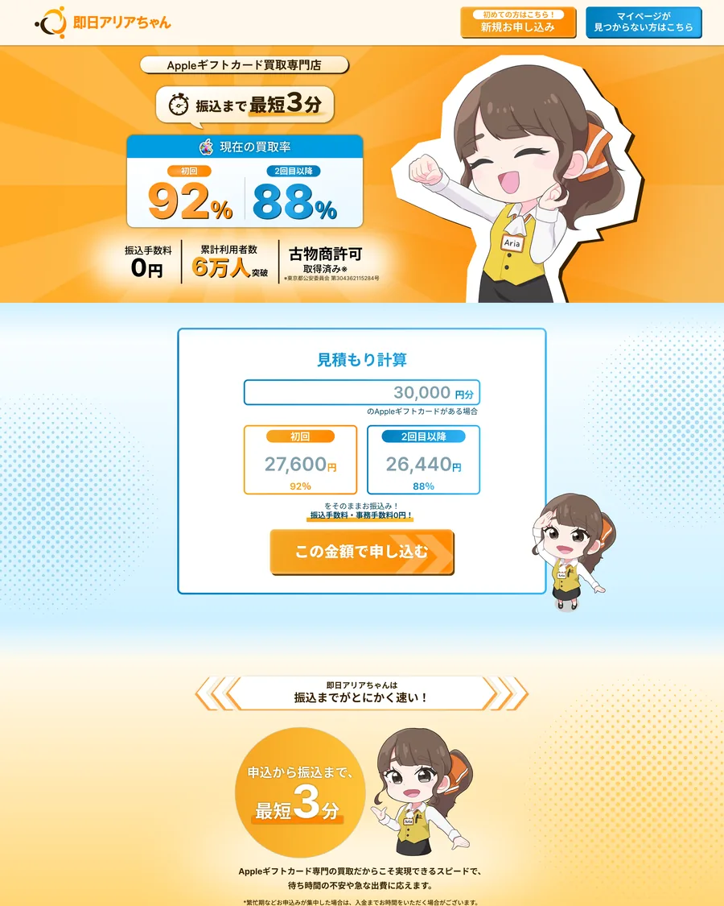
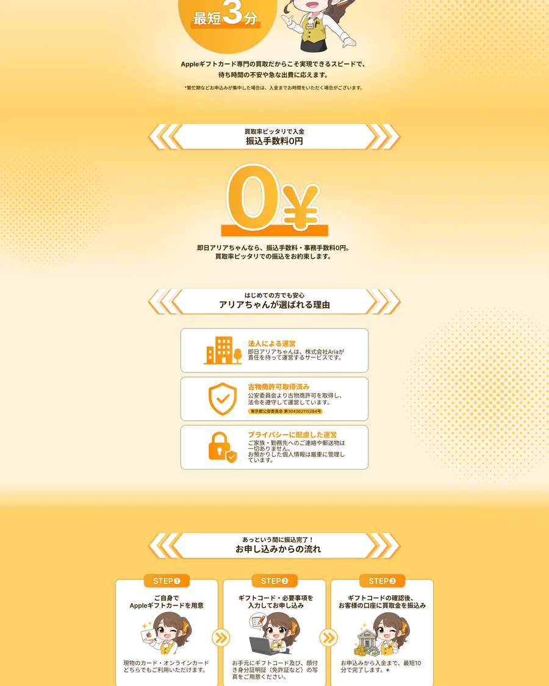
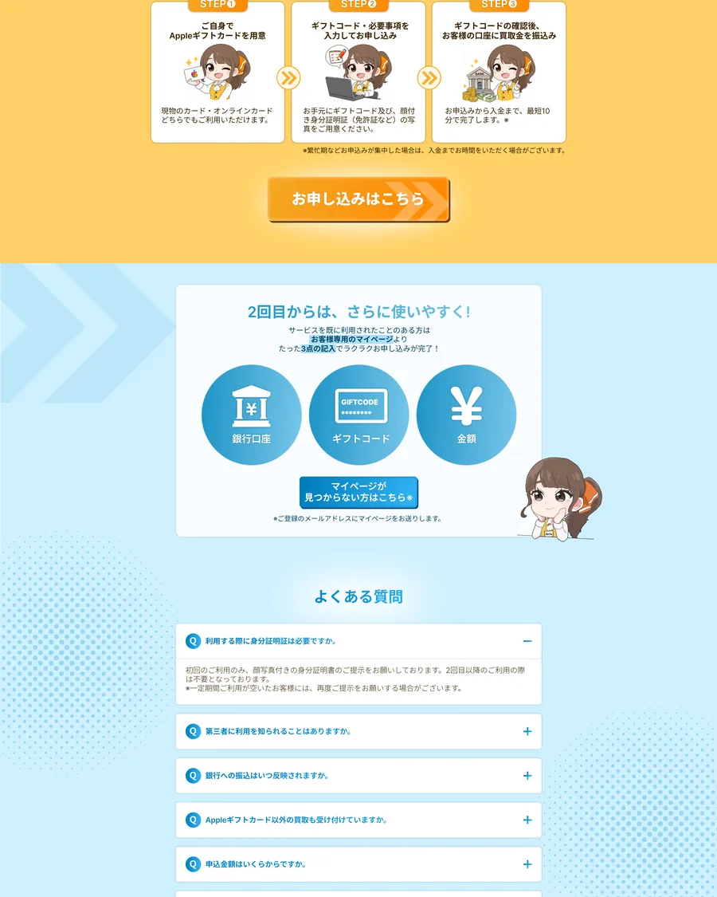

課題 / PROBLEM
情報量を、迷わない順序へ。
必要な数字や注意事項が多いからこそ、ファーストビューではサービスの特徴と見積もり導線を先に提示。初めて訪れた方が「何ができるページか」を短時間で把握できる順序に整理しました。
LANDING PAGE / 2025
構成設計
Webデザイン
買取サービス / 2025
PC / スマートフォン

OBJECTIVE / 01
Appleギフトカード買取サービス「即日アリアちゃん」のランディングページ。買取率や振込速度などのメリットを分かりやすく伝え、申し込みまでの不安を減らす構成を設計しました。
数字や注意事項など必要な情報が多い一方、初めて利用する方にも信頼感と親しみやすさを感じてもらう必要がありました。
オレンジとブルーで情報の役割を明確にし、キャラクターを案内役として配置。メリット、利用手順、よくある質問の順に理解を深め、各所から申し込みへ進める導線を整えました。
必要な数字や注意事項が多いからこそ、ファーストビューではサービスの特徴と見積もり導線を先に提示。初めて訪れた方が「何ができるページか」を短時間で把握できる順序に整理しました。

オレンジは申し込みやメリット、ブルーは説明や安心材料に使用。情報の役割を色で分け、スクロール中も現在読んでいる内容をつかみやすくしました。

キャラクターを案内役として使いながら、メリット、利用手順、よくある質問へ段階的に展開。各所に申し込み導線を設け、必要な確認を終えたタイミングで次の行動へ進める設計にしました。
FULL VIEW / 02